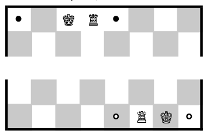

目次
用語
キャスリング
キングとルークを交差させるように動かすこと。駒の動かし方参照。
アンパッサン
相手の 2 マス進んだポーンを通過するように取ること。駒の動かし方参照。
file; ファイル
盤面の縦長の列。クイーンサイドの端から a, b, c, .., h と番号をふる。
rank; ランク
盤面の横長の行。黒側の端から 1, 2, ..., 8 と番号をふる。
チェック; 王手
対処しなければ次のターンで相手にキングを取られる状態。
チェックメイト; 詰み
このターンで自分がどんな手を打っても相手のターンで自分のキングが取られる状態。
ステイルメイト
チェックはされていないが、自らチェックされにいく他に駒の動かしようがない状態。一般にこのとき引き分けとする。
リザイン; 投了
自ら負けを認めること。盤面において優勢であってもプレーヤーのリザインを適用する。
プロモーション
ポーンが一番端の rank までたどり着いたときに、ルーク・ナイト・ビショップ・クイーンのいずれかに成り上がること。よほどの理由がない限りクイーン。
初期配置
駒の動かし方
P ポーン
R ルーク
N ナイト
B ビショップ
Q クイーン
K キング
ポーンの最初

アンパッサン
キャスリング
